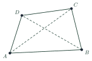
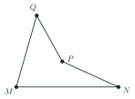
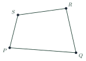
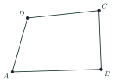
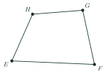
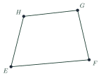
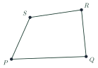
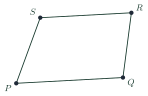
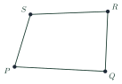

QuadrilateralsTứ giác
Grade 8 · Topic: QuadrilateralsLớp 8 · Chủ đề: Tứ giác
1Lesson IntroductionGiới thiệu bài học
Learning goalsMục tiêu bài học
By the end of this lesson you can:
Sau bài học này, em có thể:
recognize a quadrilateral, a convex quadrilateral and their vertices, sides, angles and diagonals;
nhận biết được tứ giác, tứ giác lồi và các đỉnh, cạnh, góc, đường chéo của nó;
explain and use the fact that the angles of a quadrilateral add up to \(360^\circ\);
giải thích và sử dụng được định lí tổng các góc của một tứ giác bằng \(360^\circ\);
find unknown angles in quadrilaterals, including problems with \(x\) and ratios.
tính được góc chưa biết của tứ giác, kể cả bài toán có ẩn \(x\) hoặc tỉ số.
2Mathematical VocabularyTừ vựng Toán học
quadrilateral – a figure \(ABCD\) made of four segments \(AB, BC, CD, DA\), no two of which lie on the same line.
Tứ giác – hình \(ABCD\) gồm bốn đoạn thẳng \(AB, BC, CD, DA\), trong đó không có hai đoạn nào cùng nằm trên một đường thẳng.
convex quadrilateral – it always lies on one side of the line through any of its sides.
Tứ giác lồi – tứ giác luôn nằm về một phía của đường thẳng chứa bất kì cạnh nào của nó.
vertex / side / diagonal – \(A\) is a vertex, \(AB\) a side, \(AC\) a diagonal.
Đỉnh / cạnh / đường chéo – \(A\) là đỉnh, \(AB\) là cạnh, \(AC\) là đường chéo.
interior angle – \(\widehat{A}=\widehat{DAB}\), \(\widehat{B}\), \(\widehat{C}\), \(\widehat{D}\).
Góc trong (góc của tứ giác) – \(\widehat{A}=\widehat{DAB}\), \(\widehat{B}\), \(\widehat{C}\), \(\widehat{D}\).
consecutive / opposite vertices – \(A, B\) are consecutive; \(A, C\) are opposite.
Hai đỉnh kề nhau / hai đỉnh đối nhau – \(A, B\) kề nhau; \(A, C\) đối nhau.
opposite sides / opposite angles – \(AB, CD\) are opposite sides; \(\widehat{A}, \widehat{C}\) are opposite angles.
Hai cạnh đối nhau / hai góc đối nhau – \(AB, CD\) là hai cạnh đối; \(\widehat{A}, \widehat{C}\) là hai góc đối.
3Useful English PhrasesCụm từ tiếng Anh thường gặp
List the four sides and two diagonals of quadrilateral \(PQRS\).
Kể tên bốn cạnh và hai đường chéo của tứ giác \(PQRS\).
Identify each pair of opposite vertices in quadrilateral \(KLMN\).
Chỉ ra các cặp đỉnh đối nhau của tứ giác \(KLMN\).
Determine whether quadrilateral \(EFGH\) is convex.
Xác định tứ giác \(EFGH\) có phải là tứ giác lồi không.
Draw diagonal \(AC\) to divide quadrilateral \(ABCD\) into two triangles.
Vẽ đường chéo \(AC\) để chia tứ giác \(ABCD\) thành hai tam giác.
Since diagonal \(AC\) forms two triangles, the angle sum is \(2\times180^\circ=360^\circ\).
Vì đường chéo \(AC\) tạo thành hai tam giác nên tổng các góc là \(2\cdot180^\circ=360^\circ\).
Opposite sides \(AB\) and \(CD\) do not share a vertex.
Hai cạnh đối \(AB\) và \(CD\) không có đỉnh chung.
4Prerequisite ReviewÔn tập kiến thức nền
Angle sum of a triangle (grade 7). \(\widehat{A}+\widehat{B}+\widehat{C}=180^\circ\).
Tổng ba góc của tam giác (lớp 7). \(\widehat{A}+\widehat{B}+\widehat{C}=180^\circ\).
Supplementary angles. Two adjacent angles on a line add up to \(180^\circ\).
Hai góc kề bù có tổng bằng \(180^\circ\).
5TheoryLý thuyết
5.1 QuadrilateralsTứ giác
DefinitionĐịnh nghĩa
Quadrilateral \(ABCD\) is the figure formed by four segments \(AB, BC, CD, DA\), no two of which lie on the same line.
Tứ giác \(ABCD\) là hình gồm bốn đoạn thẳng \(AB, BC, CD, DA\), trong đó không có hai đoạn thẳng nào cùng nằm trên một đường thẳng.
Vertices: \(A, B, C, D\). Sides: \(AB, BC, CD, DA\). Diagonals: \(AC, BD\) (they join opposite vertices). Angles: \(\widehat{A}, \widehat{B}, \widehat{C}, \widehat{D}\).
Các đỉnh: \(A, B, C, D\). Các cạnh: \(AB, BC, CD, DA\). Các đường chéo: \(AC, BD\) (nối hai đỉnh đối nhau). Các góc: \(\widehat{A}, \widehat{B}, \widehat{C}, \widehat{D}\).

Convex quadrilateralTứ giác lồi
A convex quadrilateral always lies on one side of the line through any of its sides. From now on, "quadrilateral" means a convex quadrilateral.
Tứ giác lồi là tứ giác luôn nằm về một phía của đường thẳng chứa bất kì cạnh nào của nó. Từ nay, khi nói tứ giác mà không chú thích gì thêm, ta hiểu đó là tứ giác lồi.

5.2 Angle sum of a quadrilateralTổng các góc của một tứ giác
TheoremĐịnh lí
The four angles of a quadrilateral add up to \(360^\circ\): \(\widehat{A}+\widehat{B}+\widehat{C}+\widehat{D}=360^\circ\).
Tổng các góc của một tứ giác bằng \(360^\circ\): \(\widehat{A}+\widehat{B}+\widehat{C}+\widehat{D}=360^\circ\).
Reason: diagonal \(AC\) divides \(ABCD\) into triangles \(ABC\) and \(ACD\); each has angle sum \(180^\circ\), so the total is \(2\cdot180^\circ=360^\circ\).
Giải thích: đường chéo \(AC\) chia tứ giác thành hai tam giác \(ABC\) và \(ACD\); mỗi tam giác có tổng ba góc \(180^\circ\) nên tổng là \(2\cdot180^\circ=360^\circ\).
ConsequencesHệ quả
A quadrilateral cannot have four acute angles (sum \(\lt 360^\circ\)) nor four obtuse angles (sum \(>360^\circ\)). If it has three right angles, the fourth is also a right angle.
Một tứ giác không thể có bốn góc nhọn (tổng \(\lt 360^\circ\)), cũng không thể có bốn góc tù (tổng \(>360^\circ\)). Nếu có ba góc vuông thì góc thứ tư cũng vuông.
6Worked ExamplesVí dụ có lời giải
ExampleVí dụ 1RememberingNhận biết – Name the partsGọi tên các yếu tố
For quadrilateral \(PQRS\) in the figure, list the sides, the diagonals and the pairs of opposite vertices.
Với tứ giác \(PQRS\) trong hình, hãy kể tên các cạnh, các đường chéo và các cặp đỉnh đối nhau.

Analysis: Go around the quadrilateral in order \(P\to Q\to R\to S\).
Phân tích: Đi theo thứ tự \(P\to Q\to R\to S\).
Sides: \(PQ, QR, RS, SP\).
Các cạnh: \(PQ, QR, RS, SP\).
Diagonals: \(PR, QS\). Opposite vertices: \(P\) and \(R\); \(Q\) and \(S\).
Các đường chéo: \(PR, QS\). Các cặp đỉnh đối nhau: \(P\) và \(R\); \(Q\) và \(S\).
Sides \(PQ, QR, RS, SP\); diagonals \(PR, QS\); opposite vertices \(P, R\) and \(Q, S\).
Cạnh \(PQ, QR, RS, SP\); đường chéo \(PR, QS\); đỉnh đối: \(P, R\) và \(Q, S\).
ExampleVí dụ 2UnderstandingThông hiểu – The fourth angleGóc thứ tư
Quadrilateral \(ABCD\) has \(\widehat{A}=70^\circ\), \(\widehat{B}=110^\circ\), \(\widehat{C}=95^\circ\). Find \(\widehat{D}\).
Tứ giác \(ABCD\) có \(\widehat{A}=70^\circ\), \(\widehat{B}=110^\circ\), \(\widehat{C}=95^\circ\). Tính \(\widehat{D}\).
Analysis: Use the angle sum \(360^\circ\).
Phân tích: Dùng tổng các góc bằng \(360^\circ\).
\(\widehat{D}=360^\circ-(70^\circ+110^\circ+95^\circ)=85^\circ\).
\(\widehat{D}=360^\circ-(70^\circ+110^\circ+95^\circ)=85^\circ\).
\(\widehat{D}=85^\circ\).
\(\widehat{D}=85^\circ\).
ExampleVí dụ 3UnderstandingThông hiểu – Angles in a ratioCác góc tỉ lệ
The angles \(\widehat{A}, \widehat{B}, \widehat{C}, \widehat{D}\) of a quadrilateral are in the ratio \(2:3:4:6\). Find them.
Các góc \(\widehat{A}, \widehat{B}, \widehat{C}, \widehat{D}\) của một tứ giác tỉ lệ với \(2:3:4:6\). Tính các góc đó.
Analysis: Divide \(360^\circ\) into \(2+3+4+6=15\) equal parts.
Phân tích: Chia \(360^\circ\) thành \(2+3+4+6=15\) phần bằng nhau.
One part: \(360^\circ:15=24^\circ\).
Mỗi phần: \(360^\circ:15=24^\circ\).
\(\widehat{A}=48^\circ,\ \widehat{B}=72^\circ,\ \widehat{C}=96^\circ,\ \widehat{D}=144^\circ\).
\(\widehat{A}=48^\circ,\ \widehat{B}=72^\circ,\ \widehat{C}=96^\circ,\ \widehat{D}=144^\circ\).
\(48^\circ,\ 72^\circ,\ 96^\circ,\ 144^\circ\).
\(48^\circ,\ 72^\circ,\ 96^\circ,\ 144^\circ\).
ExampleVí dụ 4Basic applicationVận dụng thấp – Angles with xGóc có ẩn x
The angles of quadrilateral \(ABCD\) are \((x+15)^\circ,\ (2x-10)^\circ,\ (x+25)^\circ,\ (2x+30)^\circ\). Find \(x\) and each angle.
Các góc của tứ giác \(ABCD\) lần lượt là \((x+15)^\circ,\ (2x-10)^\circ,\ (x+25)^\circ,\ (2x+30)^\circ\). Tìm \(x\) và số đo mỗi góc.
Analysis: Add the four expressions and set the sum equal to 360.
Phân tích: Cộng bốn biểu thức và cho tổng bằng 360.
\(6x+60=360\Rightarrow x=50\).
\(6x+60=360\Rightarrow x=50\).
Angles: \(65^\circ,\ 90^\circ,\ 75^\circ,\ 130^\circ\) (check: sum \(360^\circ\)).
Các góc: \(65^\circ,\ 90^\circ,\ 75^\circ,\ 130^\circ\) (thử lại: tổng \(360^\circ\)).
\(x=50\); \(65^\circ,\ 90^\circ,\ 75^\circ,\ 130^\circ\).
\(x=50\); \(65^\circ,\ 90^\circ,\ 75^\circ,\ 130^\circ\).
ExampleVí dụ 5ApplicationVận dụng – A kite frameKhung diều
A kite frame \(ABCD\) has \(AB=BC\), \(AD=CD\), \(\widehat{ABC}=100^\circ\), \(\widehat{CDA}=120^\circ\). Find \(\widehat{DAB}\) and \(\widehat{BCD}\).
Khung diều \(ABCD\) có \(AB=BC\), \(AD=CD\), \(\widehat{ABC}=100^\circ\), \(\widehat{CDA}=120^\circ\). Tính \(\widehat{DAB}\) và \(\widehat{BCD}\).
Analysis: Compare triangles \(ABD\) and \(CBD\).
Phân tích: So sánh hai tam giác \(ABD\) và \(CBD\).
\(\triangle ABD=\triangle CBD\) (s.s.s.: \(AB=CB\), \(AD=CD\), \(BD\) common), so \(\widehat{DAB}=\widehat{BCD}\).
\(\triangle ABD=\triangle CBD\) (c.c.c: \(AB=CB\), \(AD=CD\), \(BD\) chung) nên \(\widehat{DAB}=\widehat{BCD}\).
\(\widehat{DAB}+\widehat{BCD}=360^\circ-100^\circ-120^\circ=140^\circ\), so each is \(70^\circ\).
\(\widehat{DAB}+\widehat{BCD}=360^\circ-100^\circ-120^\circ=140^\circ\) nên mỗi góc bằng \(70^\circ\).
\(\widehat{DAB}=\widehat{BCD}=70^\circ\).
\(\widehat{DAB}=\widehat{BCD}=70^\circ\).
7PracticeBài tập luyện tập
A. Multiple ChoiceA. Trắc nghiệm nhiều lựa chọn
Quadrilateral \(WXYZ\) has \(\widehat{W}=70^\circ,\ \widehat{X}=75^\circ,\ \widehat{Y}=125^\circ\). Find \(\widehat{Z}\).
Tứ giác \(WXYZ\) có \(\widehat{W}=70^\circ,\ \widehat{X}=75^\circ,\ \widehat{Y}=125^\circ\). Tính \(\widehat{Z}\).
Answer: c. \(\widehat{Z}=360^\circ-70^\circ-75^\circ-125^\circ=90^\circ\).
Đáp án c. \(\widehat{Z}=360^\circ-70^\circ-75^\circ-125^\circ=90^\circ\).
A diagonal divides a quadrilateral into two triangles, so the angle sum of the quadrilateral is…
Một đường chéo chia tứ giác thành hai tam giác nên tổng các góc của tứ giác bằng
Answer: c. \(2\cdot180^\circ=360^\circ\).
Đáp án c. \(2\cdot180^\circ=360^\circ\).
What are the diagonals of quadrilateral \(ABCD\)?

Các đường chéo của tứ giác \(ABCD\) là
Answer: a. A diagonal joins two opposite vertices: \(AC,\ BD\).
Đáp án a. Đường chéo nối hai đỉnh đối nhau: \(AC,\ BD\).
B. True or FalseB. Đúng hoặc sai
A quadrilateral can have three obtuse angles.
Một tứ giác có thể có ba góc tù.
True. For example \(100^\circ,100^\circ,100^\circ,60^\circ\).
Đúng. Ví dụ \(100^\circ,100^\circ,100^\circ,60^\circ\).
In quadrilateral \(DEFG\), \(\widehat{D}=60^\circ,\ \widehat{E}=120^\circ,\ \widehat{F}=105^\circ\). Then \(\widehat{G}=95^\circ\).
Tứ giác \(DEFG\) có \(\widehat{D}=60^\circ,\ \widehat{E}=120^\circ,\ \widehat{F}=105^\circ\). Khi đó \(\widehat{G}=95^\circ\).
False. \(\widehat{G}=75^\circ\).
Sai. \(\widehat{G}=75^\circ\).
C. Short AnswerC. Trả lời ngắn
Quadrilateral \(ABCD\) has \(\widehat{A}=(x-15)^\circ,\ \widehat{B}=(2x+30)^\circ,\ \widehat{C}=(2x+30)^\circ,\ \widehat{D}=(x+15)^\circ\). Find \(x\).
Tứ giác \(ABCD\) có \(\widehat{A}=(x-15)^\circ,\ \widehat{B}=(2x+30)^\circ,\ \widehat{C}=(2x+30)^\circ,\ \widehat{D}=(x+15)^\circ\). Tìm \(x\).
Enter a number.
Nhập một số.
Answer: 50. \(6x+60=360\Rightarrow x=50\).
Đáp số: 50. \(6x+60=360\Rightarrow x=50\).
The angles \(\widehat{A},\ \widehat{B},\ \widehat{C},\ \widehat{D}\) of quadrilateral \(ABCD\) are in the ratio \(2:4:5:9\). Find the largest angle (in degrees).
Các góc \(\widehat{A},\ \widehat{B},\ \widehat{C},\ \widehat{D}\) của tứ giác \(ABCD\) tỉ lệ với \(2:4:5:9\). Tìm số đo góc lớn nhất (theo độ).
Enter a number.
Nhập một số.
Answer: 162. One part \(=360^\circ:20=18^\circ\); largest angle \(=9\cdot18^\circ=162^\circ\).
Đáp số: 162. Mỗi phần \(=360^\circ:20=18^\circ\); góc lớn nhất \(=9\cdot18^\circ=162^\circ\).
D1. Self-practice – RememberingD1. Tự luyện – Mức Nhận biết
In quadrilateral \(MNPQ\), which vertex is opposite to vertex \(M\)?
Trong tứ giác \(MNPQ\), đỉnh đối với đỉnh \(M\) là
Answer: a. Vertices \(M\) and \(P\) are not consecutive.
Đáp án a. Hai đỉnh \(M\) và \(P\) không kề nhau.
Which side of quadrilateral \(EFGH\) is opposite to side \(FG\)?

Cạnh đối của cạnh \(FG\) trong tứ giác \(EFGH\) là
Answer: b. Opposite sides have no common vertex.
Đáp án b. Hai cạnh đối nhau không có đỉnh chung.
Which is a pair of opposite angles of quadrilateral \(DEFG\)?
Cặp góc nào là hai góc đối nhau của tứ giác \(DEFG\)?
Answer: d. Opposite angles are at opposite vertices.
Đáp án d. Hai góc đối nhau ở hai đỉnh đối nhau.
D2. Self-practice – UnderstandingD2. Tự luyện – Mức Thông hiểu
Quadrilateral \(MNPQ\) has \(\widehat{M}=75^\circ,\ \widehat{N}=115^\circ,\ \widehat{P}=70^\circ\). Find the exterior angle at vertex \(Q\) (the angle adjacent and supplementary to \(\widehat{Q}\)).
Tứ giác \(MNPQ\) có \(\widehat{M}=75^\circ,\ \widehat{N}=115^\circ,\ \widehat{P}=70^\circ\). Tính góc ngoài tại đỉnh \(Q\) (góc kề bù với \(\widehat{Q}\)).
Answer: d. \(\widehat{Q}=100^\circ\), exterior angle \(=180^\circ-100^\circ=80^\circ\).
Đáp án d. \(\widehat{Q}=100^\circ\), góc ngoài \(=180^\circ-100^\circ=80^\circ\).
Quadrilateral \(ABCD\) has \(\widehat{A}=\widehat{B}=60^\circ,\ \widehat{C}=75^\circ\). Find \(\widehat{D}\).
Tứ giác \(ABCD\) có \(\widehat{A}=\widehat{B}=60^\circ,\ \widehat{C}=75^\circ\). Tính \(\widehat{D}\).
Answer: c. \(360^\circ-2\cdot60^\circ-75^\circ=165^\circ\).
Đáp án c. \(360^\circ-2\cdot60^\circ-75^\circ=165^\circ\).
The angles of quadrilateral \(DEFG\) are in the ratio \(2:4:5:9\). Find the smallest angle.
Các góc của tứ giác \(DEFG\) tỉ lệ với \(2:4:5:9\). Góc nhỏ nhất bằng
Answer: d. One part \(=18^\circ\); smallest \(=36^\circ\).
Đáp án d. Mỗi phần \(=18^\circ\); góc nhỏ nhất \(=36^\circ\).
D3. Self-practice – Basic applicationD3. Tự luyện – Mức Vận dụng thấp
Quadrilateral \(PQRS\) has \(\widehat{P}=(x+10)^\circ,\ \widehat{Q}=(2x+30)^\circ,\ \widehat{R}=x^\circ,\ \widehat{S}=(x-5)^\circ\). Find \(\widehat{P}\).
Tứ giác \(PQRS\) có \(\widehat{P}=(x+10)^\circ,\ \widehat{Q}=(2x+30)^\circ,\ \widehat{R}=x^\circ,\ \widehat{S}=(x-5)^\circ\). Tính \(\widehat{P}\).
Answer: c. \(5x+35=360\Rightarrow x=65\Rightarrow \widehat{P}=75^\circ\).
Đáp án c. \(5x+35=360\Rightarrow x=65\Rightarrow \widehat{P}=75^\circ\).
Quadrilateral \(MNPQ\) has \(MN=NP,\ MQ=PQ,\ \widehat{MNP}=94^\circ,\ \widehat{PQM}=106^\circ\). Find \(\widehat{QMN}\).
Tứ giác \(MNPQ\) có \(MN=NP,\ MQ=PQ,\ \widehat{MNP}=94^\circ,\ \widehat{PQM}=106^\circ\). Tính \(\widehat{QMN}\).
Answer: a. \(\triangle NMQ=\triangle NPQ\) (s.s.s.), so \(\widehat{M}=\widehat{P}=(360^\circ-94^\circ-106^\circ):2=80^\circ\).
Đáp án a. \(\triangle NMQ=\triangle NPQ\) (c.c.c) nên \(\widehat{M}=\widehat{P}=(360^\circ-94^\circ-106^\circ):2=80^\circ\).
In convex quadrilateral \(DEFG\), \(\widehat{F}=100^\circ,\ \widehat{G}=90^\circ\). The bisectors of \(\widehat{D}\) and \(\widehat{E}\) meet at \(O\). Find \(\widehat{DOE}\).
Tứ giác lồi \(DEFG\) có \(\widehat{F}=100^\circ,\ \widehat{G}=90^\circ\). Các tia phân giác của \(\widehat{D}\) và \(\widehat{E}\) cắt nhau tại \(O\). Tính \(\widehat{DOE}\).
Answer: a. \(\widehat{D}+\widehat{E}=360^\circ-100^\circ-90^\circ=170^\circ\), so \(\widehat{DOE}=180^\circ-170^\circ:2=95^\circ\).
Đáp án a. \(\widehat{D}+\widehat{E}=360^\circ-100^\circ-90^\circ=170^\circ\) nên \(\widehat{DOE}=180^\circ-170^\circ:2=95^\circ\).
D4. Self-practice – Advanced applicationD4. Tự luyện – Mức Vận dụng
A surveyor measures three corners of a quadrilateral garden: \(90^\circ\), \(60^\circ\) and \(110^\circ\). What is the fourth corner angle?
Một người đo ba góc của một mảnh vườn hình tứ giác được \(90^\circ\), \(60^\circ\) và \(110^\circ\). Góc còn lại của mảnh vườn bằng bao nhiêu?
Answer: b. \(360^\circ-(90^\circ+60^\circ+110^\circ)=100^\circ\).
Đáp án b. \(360^\circ-(90^\circ+60^\circ+110^\circ)=100^\circ\).
A kite frame \(ABCD\) has \(AB=AD\) and \(CB=CD\). The angle at the top \(A\) is \(98^\circ\) and the angle at the bottom \(C\) is \(96^\circ\). Find the angle at \(B\).
Khung một chiếc diều là tứ giác \(ABCD\) có \(AB=AD\), \(CB=CD\). Góc ở đỉnh \(A\) bằng \(98^\circ\), góc ở đỉnh \(C\) bằng \(96^\circ\). Tính góc ở đỉnh \(B\).
Answer: d. \(\widehat{B}=\widehat{D}=(360^\circ-98^\circ-96^\circ):2=83^\circ\).
Đáp án d. \(\widehat{B}=\widehat{D}=(360^\circ-98^\circ-96^\circ):2=83^\circ\).
A quadrilateral has three right angles. How many right angles does it have in total?
Một tứ giác có ba góc vuông. Tứ giác đó có tất cả bao nhiêu góc vuông?
Answer: d. The fourth angle is \(360^\circ-270^\circ=90^\circ\).
Đáp án d. Góc thứ tư bằng \(360^\circ-270^\circ=90^\circ\).
A. Multiple ChoiceA. Trắc nghiệm nhiều lựa chọn
Quadrilateral \(EFGH\) has \(\widehat{E}=60^\circ,\ \widehat{F}=75^\circ,\ \widehat{G}=100^\circ\). Find \(\widehat{H}\).
Tứ giác \(EFGH\) có \(\widehat{E}=60^\circ,\ \widehat{F}=75^\circ,\ \widehat{G}=100^\circ\). Tính \(\widehat{H}\).
Answer: c. \(\widehat{H}=360^\circ-60^\circ-75^\circ-100^\circ=125^\circ\).
Đáp án c. \(\widehat{H}=360^\circ-60^\circ-75^\circ-100^\circ=125^\circ\).
In every quadrilateral, the four angles add up to…
Trong mọi tứ giác, tổng bốn góc bằng
Answer: c. \(2\cdot180^\circ=360^\circ\).
Đáp án c. \(2\cdot180^\circ=360^\circ\).
What are the diagonals of quadrilateral \(EFGH\)?

Các đường chéo của tứ giác \(EFGH\) là
Answer: b. A diagonal joins two opposite vertices: \(EG,\ FH\).
Đáp án b. Đường chéo nối hai đỉnh đối nhau: \(EG,\ FH\).
B. True or FalseB. Đúng hoặc sai
A quadrilateral has exactly two diagonals.
Một tứ giác có đúng hai đường chéo.
True. Each diagonal joins a pair of opposite vertices; there are two such pairs.
Đúng. Mỗi đường chéo nối một cặp đỉnh đối nhau; có hai cặp như vậy.
In quadrilateral \(ABCD\), \(\widehat{A}=105^\circ,\ \widehat{B}=55^\circ,\ \widehat{C}=115^\circ\). Then \(\widehat{D}=95^\circ\).
Tứ giác \(ABCD\) có \(\widehat{A}=105^\circ,\ \widehat{B}=55^\circ,\ \widehat{C}=115^\circ\). Khi đó \(\widehat{D}=95^\circ\).
False. \(\widehat{D}=85^\circ\).
Sai. \(\widehat{D}=85^\circ\).
C. Short AnswerC. Trả lời ngắn
Quadrilateral \(KLMN\) has \(\widehat{K}=(x+35)^\circ,\ \widehat{L}=(2x-20)^\circ,\ \widehat{M}=(x+40)^\circ,\ \widehat{N}=(3x+25)^\circ\). Find \(x\).
Tứ giác \(KLMN\) có \(\widehat{K}=(x+35)^\circ,\ \widehat{L}=(2x-20)^\circ,\ \widehat{M}=(x+40)^\circ,\ \widehat{N}=(3x+25)^\circ\). Tìm \(x\).
Enter a number.
Nhập một số.
Answer: 40. \(7x+80=360\Rightarrow x=40\).
Đáp số: 40. \(7x+80=360\Rightarrow x=40\).
The angles \(\widehat{I},\ \widehat{J},\ \widehat{K},\ \widehat{L}\) of quadrilateral \(IJKL\) are in the ratio \(2:4:5:9\). Find the largest angle (in degrees).
Các góc \(\widehat{I},\ \widehat{J},\ \widehat{K},\ \widehat{L}\) của tứ giác \(IJKL\) tỉ lệ với \(2:4:5:9\). Tìm số đo góc lớn nhất (theo độ).
Enter a number.
Nhập một số.
Answer: 162. One part \(=360^\circ:20=18^\circ\); largest angle \(=9\cdot18^\circ=162^\circ\).
Đáp số: 162. Mỗi phần \(=360^\circ:20=18^\circ\); góc lớn nhất \(=9\cdot18^\circ=162^\circ\).
D1. Self-practice – RememberingD1. Tự luyện – Mức Nhận biết
In quadrilateral \(PQRS\), which vertex is opposite to vertex \(S\)?
Trong tứ giác \(PQRS\), đỉnh đối với đỉnh \(S\) là
Answer: d. Vertices \(S\) and \(Q\) are not consecutive.
Đáp án d. Hai đỉnh \(S\) và \(Q\) không kề nhau.
Which side of quadrilateral \(PQRS\) is opposite to side \(RS\)?

Cạnh đối của cạnh \(RS\) trong tứ giác \(PQRS\) là
Answer: b. Opposite sides have no common vertex.
Đáp án b. Hai cạnh đối nhau không có đỉnh chung.
Which is a pair of opposite angles of quadrilateral \(MNPQ\)?
Cặp góc nào là hai góc đối nhau của tứ giác \(MNPQ\)?
Answer: b. Opposite angles are at opposite vertices.
Đáp án b. Hai góc đối nhau ở hai đỉnh đối nhau.
D2. Self-practice – UnderstandingD2. Tự luyện – Mức Thông hiểu
Quadrilateral \(IJKL\) has \(\widehat{I}=95^\circ,\ \widehat{J}=70^\circ,\ \widehat{K}=100^\circ\). Find the exterior angle at vertex \(L\) (the angle adjacent and supplementary to \(\widehat{L}\)).
Tứ giác \(IJKL\) có \(\widehat{I}=95^\circ,\ \widehat{J}=70^\circ,\ \widehat{K}=100^\circ\). Tính góc ngoài tại đỉnh \(L\) (góc kề bù với \(\widehat{L}\)).
Answer: a. \(\widehat{L}=95^\circ\), exterior angle \(=180^\circ-95^\circ=85^\circ\).
Đáp án a. \(\widehat{L}=95^\circ\), góc ngoài \(=180^\circ-95^\circ=85^\circ\).
Quadrilateral \(MNPQ\) has \(\widehat{M}=\widehat{N}=70^\circ,\ \widehat{P}=55^\circ\). Find \(\widehat{Q}\).
Tứ giác \(MNPQ\) có \(\widehat{M}=\widehat{N}=70^\circ,\ \widehat{P}=55^\circ\). Tính \(\widehat{Q}\).
Answer: b. \(360^\circ-2\cdot70^\circ-55^\circ=165^\circ\).
Đáp án b. \(360^\circ-2\cdot70^\circ-55^\circ=165^\circ\).
The angles of quadrilateral \(KLMN\) are in the ratio \(2:3:4:6\). Find the smallest angle.
Các góc của tứ giác \(KLMN\) tỉ lệ với \(2:3:4:6\). Góc nhỏ nhất bằng
Answer: d. One part \(=24^\circ\); smallest \(=48^\circ\).
Đáp án d. Mỗi phần \(=24^\circ\); góc nhỏ nhất \(=48^\circ\).
D3. Self-practice – Basic applicationD3. Tự luyện – Mức Vận dụng thấp
Quadrilateral \(EFGH\) has \(\widehat{E}=x^\circ,\ \widehat{F}=(x+30)^\circ,\ \widehat{G}=(3x-20)^\circ,\ \widehat{H}=(x+20)^\circ\). Find \(\widehat{F}\).
Tứ giác \(EFGH\) có \(\widehat{E}=x^\circ,\ \widehat{F}=(x+30)^\circ,\ \widehat{G}=(3x-20)^\circ,\ \widehat{H}=(x+20)^\circ\). Tính \(\widehat{F}\).
Answer: a. \(6x+30=360\Rightarrow x=55\Rightarrow \widehat{F}=85^\circ\).
Đáp án a. \(6x+30=360\Rightarrow x=55\Rightarrow \widehat{F}=85^\circ\).
Quadrilateral \(MNPQ\) has \(MN=NP,\ MQ=PQ,\ \widehat{MNP}=70^\circ,\ \widehat{PQM}=138^\circ\). Find \(\widehat{QMN}\).
Tứ giác \(MNPQ\) có \(MN=NP,\ MQ=PQ,\ \widehat{MNP}=70^\circ,\ \widehat{PQM}=138^\circ\). Tính \(\widehat{QMN}\).
Answer: c. \(\triangle NMQ=\triangle NPQ\) (s.s.s.), so \(\widehat{M}=\widehat{P}=(360^\circ-70^\circ-138^\circ):2=76^\circ\).
Đáp án c. \(\triangle NMQ=\triangle NPQ\) (c.c.c) nên \(\widehat{M}=\widehat{P}=(360^\circ-70^\circ-138^\circ):2=76^\circ\).
In convex quadrilateral \(IJKL\), \(\widehat{K}=76^\circ,\ \widehat{L}=64^\circ\). The bisectors of \(\widehat{I}\) and \(\widehat{J}\) meet at \(O\). Find \(\widehat{IOJ}\).
Tứ giác lồi \(IJKL\) có \(\widehat{K}=76^\circ,\ \widehat{L}=64^\circ\). Các tia phân giác của \(\widehat{I}\) và \(\widehat{J}\) cắt nhau tại \(O\). Tính \(\widehat{IOJ}\).
Answer: c. \(\widehat{I}+\widehat{J}=360^\circ-76^\circ-64^\circ=220^\circ\), so \(\widehat{IOJ}=180^\circ-220^\circ:2=70^\circ\).
Đáp án c. \(\widehat{I}+\widehat{J}=360^\circ-76^\circ-64^\circ=220^\circ\) nên \(\widehat{IOJ}=180^\circ-220^\circ:2=70^\circ\).
D4. Self-practice – Advanced applicationD4. Tự luyện – Mức Vận dụng
A surveyor measures three corners of a quadrilateral garden: \(70^\circ\), \(70^\circ\) and \(90^\circ\). What is the fourth corner angle?
Một người đo ba góc của một mảnh vườn hình tứ giác được \(70^\circ\), \(70^\circ\) và \(90^\circ\). Góc còn lại của mảnh vườn bằng bao nhiêu?
Answer: c. \(360^\circ-(70^\circ+70^\circ+90^\circ)=130^\circ\).
Đáp án c. \(360^\circ-(70^\circ+70^\circ+90^\circ)=130^\circ\).
A kite frame \(ABCD\) has \(AB=AD\) and \(CB=CD\). The angle at the top \(A\) is \(68^\circ\) and the angle at the bottom \(C\) is \(76^\circ\). Find the angle at \(B\).
Khung một chiếc diều là tứ giác \(ABCD\) có \(AB=AD\), \(CB=CD\). Góc ở đỉnh \(A\) bằng \(68^\circ\), góc ở đỉnh \(C\) bằng \(76^\circ\). Tính góc ở đỉnh \(B\).
Answer: a. \(\widehat{B}=\widehat{D}=(360^\circ-68^\circ-76^\circ):2=108^\circ\).
Đáp án a. \(\widehat{B}=\widehat{D}=(360^\circ-68^\circ-76^\circ):2=108^\circ\).
What is the greatest number of acute angles a quadrilateral can have?
Một tứ giác có nhiều nhất bao nhiêu góc nhọn?
Answer: c. Four acute angles would add up to less than \(360^\circ\); three is possible, e.g. \(80^\circ,80^\circ,80^\circ,120^\circ\).
Đáp án c. Bốn góc nhọn có tổng nhỏ hơn \(360^\circ\); có thể có ba góc, ví dụ \(80^\circ,80^\circ,80^\circ,120^\circ\).
A. Multiple ChoiceA. Trắc nghiệm nhiều lựa chọn
Quadrilateral \(IJKL\) has \(\widehat{I}=90^\circ,\ \widehat{J}=85^\circ,\ \widehat{K}=80^\circ\). Find \(\widehat{L}\).
Tứ giác \(IJKL\) có \(\widehat{I}=90^\circ,\ \widehat{J}=85^\circ,\ \widehat{K}=80^\circ\). Tính \(\widehat{L}\).
Answer: d. \(\widehat{L}=360^\circ-90^\circ-85^\circ-80^\circ=105^\circ\).
Đáp án d. \(\widehat{L}=360^\circ-90^\circ-85^\circ-80^\circ=105^\circ\).
Which number is the angle sum of any quadrilateral?
Tổng các góc của một tứ giác bất kì là
Answer: c. \(2\cdot180^\circ=360^\circ\).
Đáp án c. \(2\cdot180^\circ=360^\circ\).
What are the diagonals of quadrilateral \(PQRS\)?

Các đường chéo của tứ giác \(PQRS\) là
Answer: b. A diagonal joins two opposite vertices: \(PR,\ QS\).
Đáp án b. Đường chéo nối hai đỉnh đối nhau: \(PR,\ QS\).
B. True or FalseB. Đúng hoặc sai
A convex quadrilateral can have four acute angles.
Một tứ giác lồi có thể có bốn góc nhọn.
False. Four acute angles add up to less than \(360^\circ\).
Sai. Bốn góc nhọn có tổng nhỏ hơn \(360^\circ\).
In quadrilateral \(KLMN\), \(\widehat{K}=65^\circ,\ \widehat{L}=130^\circ,\ \widehat{M}=110^\circ\). Then \(\widehat{N}=55^\circ\).
Tứ giác \(KLMN\) có \(\widehat{K}=65^\circ,\ \widehat{L}=130^\circ,\ \widehat{M}=110^\circ\). Khi đó \(\widehat{N}=55^\circ\).
True. \(\widehat{N}=55^\circ\).
Đúng. \(\widehat{N}=55^\circ\).
C. Short AnswerC. Trả lời ngắn
Quadrilateral \(DEFG\) has \(\widehat{D}=(2x-20)^\circ,\ \widehat{E}=(3x+10)^\circ,\ \widehat{F}=(3x+25)^\circ,\ \widehat{G}=(2x-5)^\circ\). Find \(x\).
Tứ giác \(DEFG\) có \(\widehat{D}=(2x-20)^\circ,\ \widehat{E}=(3x+10)^\circ,\ \widehat{F}=(3x+25)^\circ,\ \widehat{G}=(2x-5)^\circ\). Tìm \(x\).
Enter a number.
Nhập một số.
Answer: 35. \(10x+10=360\Rightarrow x=35\).
Đáp số: 35. \(10x+10=360\Rightarrow x=35\).
The angles \(\widehat{P},\ \widehat{Q},\ \widehat{R},\ \widehat{S}\) of quadrilateral \(PQRS\) are in the ratio \(4:5:6:9\). Find the largest angle (in degrees).
Các góc \(\widehat{P},\ \widehat{Q},\ \widehat{R},\ \widehat{S}\) của tứ giác \(PQRS\) tỉ lệ với \(4:5:6:9\). Tìm số đo góc lớn nhất (theo độ).
Enter a number.
Nhập một số.
Answer: 135. One part \(=360^\circ:24=15^\circ\); largest angle \(=9\cdot15^\circ=135^\circ\).
Đáp số: 135. Mỗi phần \(=360^\circ:24=15^\circ\); góc lớn nhất \(=9\cdot15^\circ=135^\circ\).
D1. Self-practice – RememberingD1. Tự luyện – Mức Nhận biết
In quadrilateral \(EFGH\), which vertex is opposite to vertex \(F\)?
Trong tứ giác \(EFGH\), đỉnh đối với đỉnh \(F\) là
Answer: c. Vertices \(F\) and \(H\) are not consecutive.
Đáp án c. Hai đỉnh \(F\) và \(H\) không kề nhau.
Which side of quadrilateral \(PQRS\) is opposite to side \(QR\)?

Cạnh đối của cạnh \(QR\) trong tứ giác \(PQRS\) là
Answer: b. Opposite sides have no common vertex.
Đáp án b. Hai cạnh đối nhau không có đỉnh chung.
Which is a pair of opposite angles of quadrilateral \(ABCD\)?
Cặp góc nào là hai góc đối nhau của tứ giác \(ABCD\)?
Answer: d. Opposite angles are at opposite vertices.
Đáp án d. Hai góc đối nhau ở hai đỉnh đối nhau.
D2. Self-practice – UnderstandingD2. Tự luyện – Mức Thông hiểu
Quadrilateral \(MNPQ\) has \(\widehat{M}=110^\circ,\ \widehat{N}=100^\circ,\ \widehat{P}=110^\circ\). Find the exterior angle at vertex \(Q\) (the angle adjacent and supplementary to \(\widehat{Q}\)).
Tứ giác \(MNPQ\) có \(\widehat{M}=110^\circ,\ \widehat{N}=100^\circ,\ \widehat{P}=110^\circ\). Tính góc ngoài tại đỉnh \(Q\) (góc kề bù với \(\widehat{Q}\)).
Answer: a. \(\widehat{Q}=40^\circ\), exterior angle \(=180^\circ-40^\circ=140^\circ\).
Đáp án a. \(\widehat{Q}=40^\circ\), góc ngoài \(=180^\circ-40^\circ=140^\circ\).
Quadrilateral \(WXYZ\) has \(\widehat{W}=\widehat{X}=65^\circ,\ \widehat{Y}=70^\circ\). Find \(\widehat{Z}\).
Tứ giác \(WXYZ\) có \(\widehat{W}=\widehat{X}=65^\circ,\ \widehat{Y}=70^\circ\). Tính \(\widehat{Z}\).
Answer: c. \(360^\circ-2\cdot65^\circ-70^\circ=160^\circ\).
Đáp án c. \(360^\circ-2\cdot65^\circ-70^\circ=160^\circ\).
The angles of quadrilateral \(MNPQ\) are in the ratio \(1:2:3:4\). Find the smallest angle.
Các góc của tứ giác \(MNPQ\) tỉ lệ với \(1:2:3:4\). Góc nhỏ nhất bằng
Answer: a. One part \(=36^\circ\); smallest \(=36^\circ\).
Đáp án a. Mỗi phần \(=36^\circ\); góc nhỏ nhất \(=36^\circ\).
D3. Self-practice – Basic applicationD3. Tự luyện – Mức Vận dụng thấp
Quadrilateral \(KLMN\) has \(\widehat{K}=(x+35)^\circ,\ \widehat{L}=(x-10)^\circ,\ \widehat{M}=(x+40)^\circ,\ \widehat{N}=(2x+45)^\circ\). Find \(\widehat{K}\).
Tứ giác \(KLMN\) có \(\widehat{K}=(x+35)^\circ,\ \widehat{L}=(x-10)^\circ,\ \widehat{M}=(x+40)^\circ,\ \widehat{N}=(2x+45)^\circ\). Tính \(\widehat{K}\).
Answer: d. \(5x+110=360\Rightarrow x=50\Rightarrow \widehat{K}=85^\circ\).
Đáp án d. \(5x+110=360\Rightarrow x=50\Rightarrow \widehat{K}=85^\circ\).
Quadrilateral \(DEFG\) has \(DE=EF,\ DG=FG,\ \widehat{DEF}=64^\circ,\ \widehat{FGD}=88^\circ\). Find \(\widehat{GDE}\).
Tứ giác \(DEFG\) có \(DE=EF,\ DG=FG,\ \widehat{DEF}=64^\circ,\ \widehat{FGD}=88^\circ\). Tính \(\widehat{GDE}\).
Answer: d. \(\triangle EDG=\triangle EFG\) (s.s.s.), so \(\widehat{D}=\widehat{F}=(360^\circ-64^\circ-88^\circ):2=104^\circ\).
Đáp án d. \(\triangle EDG=\triangle EFG\) (c.c.c) nên \(\widehat{D}=\widehat{F}=(360^\circ-64^\circ-88^\circ):2=104^\circ\).
In convex quadrilateral \(EFGH\), \(\widehat{G}=112^\circ,\ \widehat{H}=80^\circ\). The bisectors of \(\widehat{E}\) and \(\widehat{F}\) meet at \(O\). Find \(\widehat{EOF}\).
Tứ giác lồi \(EFGH\) có \(\widehat{G}=112^\circ,\ \widehat{H}=80^\circ\). Các tia phân giác của \(\widehat{E}\) và \(\widehat{F}\) cắt nhau tại \(O\). Tính \(\widehat{EOF}\).
Answer: a. \(\widehat{E}+\widehat{F}=360^\circ-112^\circ-80^\circ=168^\circ\), so \(\widehat{EOF}=180^\circ-168^\circ:2=96^\circ\).
Đáp án a. \(\widehat{E}+\widehat{F}=360^\circ-112^\circ-80^\circ=168^\circ\) nên \(\widehat{EOF}=180^\circ-168^\circ:2=96^\circ\).
D4. Self-practice – Advanced applicationD4. Tự luyện – Mức Vận dụng
A surveyor measures three corners of a quadrilateral garden: \(95^\circ\), \(80^\circ\) and \(120^\circ\). What is the fourth corner angle?
Một người đo ba góc của một mảnh vườn hình tứ giác được \(95^\circ\), \(80^\circ\) và \(120^\circ\). Góc còn lại của mảnh vườn bằng bao nhiêu?
Answer: b. \(360^\circ-(95^\circ+80^\circ+120^\circ)=65^\circ\).
Đáp án b. \(360^\circ-(95^\circ+80^\circ+120^\circ)=65^\circ\).
A kite frame \(ABCD\) has \(AB=AD\) and \(CB=CD\). The angle at the top \(A\) is \(62^\circ\) and the angle at the bottom \(C\) is \(40^\circ\). Find the angle at \(B\).
Khung một chiếc diều là tứ giác \(ABCD\) có \(AB=AD\), \(CB=CD\). Góc ở đỉnh \(A\) bằng \(62^\circ\), góc ở đỉnh \(C\) bằng \(40^\circ\). Tính góc ở đỉnh \(B\).
Answer: c. \(\widehat{B}=\widehat{D}=(360^\circ-62^\circ-40^\circ):2=129^\circ\).
Đáp án c. \(\widehat{B}=\widehat{D}=(360^\circ-62^\circ-40^\circ):2=129^\circ\).
What is the greatest number of obtuse angles a quadrilateral can have?
Một tứ giác có nhiều nhất bao nhiêu góc tù?
Answer: a. Four obtuse angles would add up to more than \(360^\circ\); three is possible, e.g. \(100^\circ,100^\circ,100^\circ,60^\circ\).
Đáp án a. Bốn góc tù có tổng lớn hơn \(360^\circ\); có thể có ba góc, ví dụ \(100^\circ,100^\circ,100^\circ,60^\circ\).
8Common MistakesLỗi thường gặp
Joining consecutive vertices as a diagonal. \(AB\) is a side; diagonals are \(AC\) and \(BD\).
Nhầm cạnh với đường chéo. \(AB\) là cạnh; đường chéo là \(AC\) và \(BD\).
Using \(180^\circ\) instead of \(360^\circ\). \(180^\circ\) is for a triangle.
Dùng \(180^\circ\) thay cho \(360^\circ\). \(180^\circ\) là tổng ba góc của tam giác.
Naming the quadrilateral out of order. \(ABCD\) means sides \(AB, BC, CD, DA\); \(ACBD\) is a different figure.
Gọi tên không theo thứ tự. \(ABCD\) có các cạnh \(AB, BC, CD, DA\); \(ACBD\) là hình khác.
Forgetting to check the answer. After finding \(x\), add the angles to make sure the sum is \(360^\circ\).
Quên thử lại. Sau khi tìm \(x\), cộng các góc để kiểm tra tổng bằng \(360^\circ\).
9Lesson SummaryTổng kết
Quadrilateral \(ABCD\): 4 vertices, 4 sides, 2 diagonals, 4 angles.
Tứ giác \(ABCD\): 4 đỉnh, 4 cạnh, 2 đường chéo, 4 góc.
\(\widehat{A}+\widehat{B}+\widehat{C}+\widehat{D}=360^\circ\).
\(\widehat{A}+\widehat{B}+\widehat{C}+\widehat{D}=360^\circ\).
Key English: quadrilateral, convex, vertex, side, diagonal, opposite angles.
Thuật ngữ cần nhớ (chạm vào để xem tiếng Anh): tứ giác, tứ giác lồi, đỉnh, cạnh, đường chéo, hai góc đối nhau.